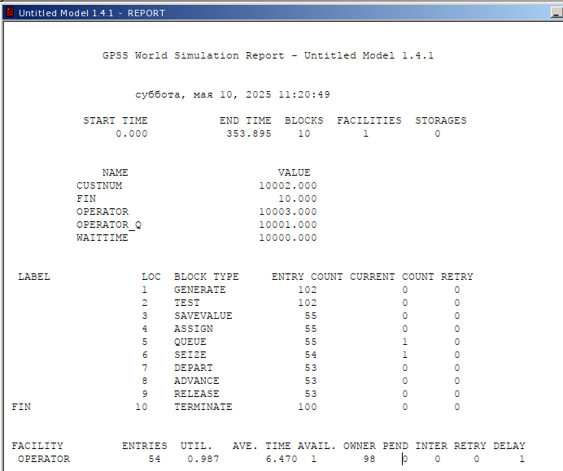
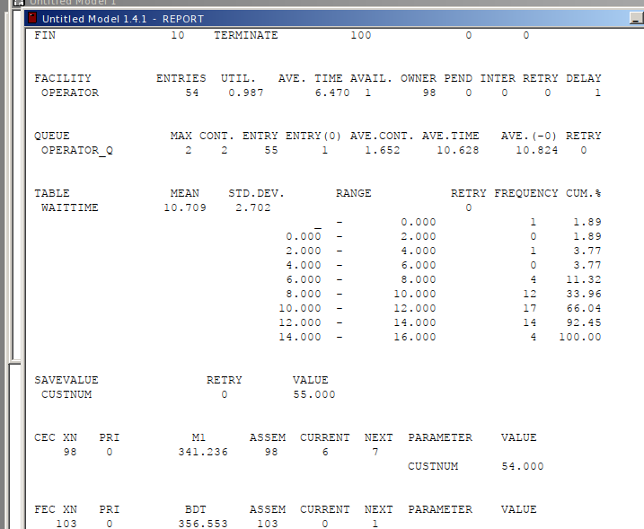
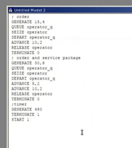
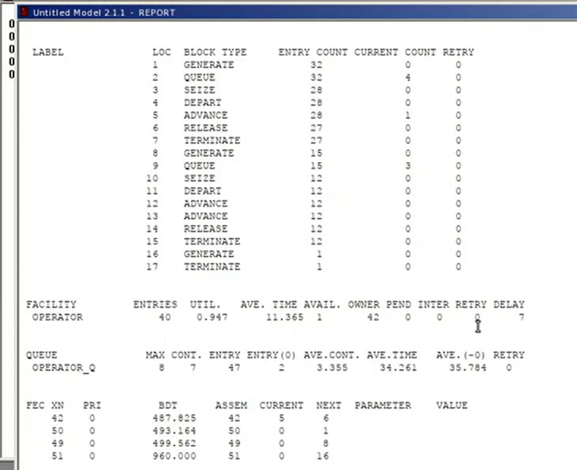
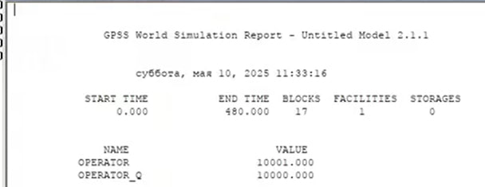

- Извекова Мария Петровна
- студентка 3-го курса
- Российский университет дружбы народов
- 1132226460@pfur.ru

Построить модели несколько моделей в GPSS и проанализировать их отчеты
Построить модели: 1. Модель оформления заказов клиентов одним оператором 2. Построение гистограммы распределения заявок в очереди 3. Модель обслуживания двух типов заказов от клиентов в интернет-магазине 4. Модель оформления заказов несколькими операторами
В интернет-магазине заказы принимает один оператор. Интервалы поступления заказов распределены равномерно с интервалом 15 ± 4 мин. Время оформления заказа также распределено равномерно на интервале 10 ± 2 мин. Обработка поступивших заказов происходит в порядке очереди (FIFO). Требуется разработать модель обработки заказов в течение 8 часов.
Скорректируйте модель в соответствии с изменениями входных данных: интервалы поступления заказов распределены равномерно с интервалом 3.14 ± 1.7 мин; время оформления заказа также распределено равномерно на интервале 6.66 ± 1.7 мин.
Предположим требуется построить гистограмму распределения заявок, ожидающих обработки в очереди в примере из предыдущего упражнения. Для построения гистограммы необходимо сформировать таблицу значений заявок в очереди, записываемых в неё с определённой частотой. Команда описания такой таблицы QTABLE имеет следующий формат: Name QTABLE A,B,C,D Здесь Name — метка, определяющая имя таблицы. Далее должны быть заданы операнды: А задается элемент данных, чьё частотное распределение будет заноситься в таблицу (может быть именем, выражением в скобках или системным числовым атрибутом (СЧА)); B задается верхний предел первого частотного интервала; С задает ширину частотного интервала — разницу между верхней и нижней границей каждого частотного класса; D задаёт число частотных интервалов.


В интернет-магазин к одному оператору поступают два типа заявок от клиентов — обычный заказ и заказ с оформление дополнительного пакета услуг. Заявки первого типа поступают каждые 15 ± 4 мин. Заявки второго типа — каждые 30 ± 8 мин. Оператор обрабатывает заявки по принципу FIFO («первым пришел — первым обслужился»). Время, затраченное на оформление обычного заказа, составляет 10 ± 2 мин, а на оформление дополнительного пакета услуг — 5 ± 2 мин. Требуется разработать модель обработки заказов в течение 8 часов, обеспечив сбор данных об очереди заявок от клиентов.



Скорректируйте модель так, чтобы учитывалось условие, что число заказов с дополнительным пакетом услуг составляет 30% от общего числа заказов. Используйте оператор TRANSFER.
В интернет-магазине заказы принимают 4 оператора. Интервалы поступления заказов распределены равномерно с интервалом 5 ± 2 мин. Время оформления заказа каждым оператором также распределено равномерно на интервале 10 ± 2 мин. Обработка поступивших заказов происходит в порядке очереди (FIFO). Требуется определить характеристики очереди заявок на оформление заказов при условии, что заявка может обрабатываться одним из 4-х операторов в течение восьмичасового рабочего дня
Изменим модель: требуется учесть в ней возможные отказы клиентов от заказа – когда при подаче заявки на заказ клиент видит в очереди более двух других заявок, он отказывается от подачи заявки, то есть отказывается от обслуживания (используем блок TEST и стандартный числовой атрибут Qj текущей длины очереди j).
В результате была реализована с помощью gpss:
модель оформления заказов клиентов одним оператором; построение гистограммы распределения заявок в очереди; модель обслуживания двух типов заказов от клиентов в интернет-магазине; модель оформления заказов несколькими операторами.
Королькова А. В., Кулябов Д. С. Модели обработки заказов
Королькова А. В., Кулябов Д. С. Имитационное моделирование в GPSS